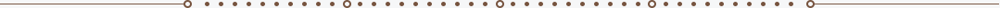

彭水简介
彭水苗族土家族自治县，重庆市辖自治县，位于重庆市东南部，位于鄂黔隆起带，向四川中台坳下滑的斜坡上，地势西北高东南低，属中亚热带湿润季风气候区，气候温和，雨量充沛，总面积3903.79平方千米。
西汉，置涪陵县。隋开皇十三年（593年），置彭水县。 彭水有摩围山、七跃山等生态山系和乌江、郁江等生态水系，乌江和郁江彭水段水质稳定保持在Ⅱ类及以上，是“国家园林县城”，“绿色中国行”四次走进彭水。自汉初置县已两千余年，曾为唐黔中道治所地，有丰富的苗族文化、盐丹文化、黔中文化、红色文化和乌江文化。 是国家园林县城 、全国义务教育发展基本均衡县 、“十三五”搬迁工作成效明显县 、国家乡村振兴重点帮扶县。

旅游胜地

Welcome to Chongqing Pengshui!